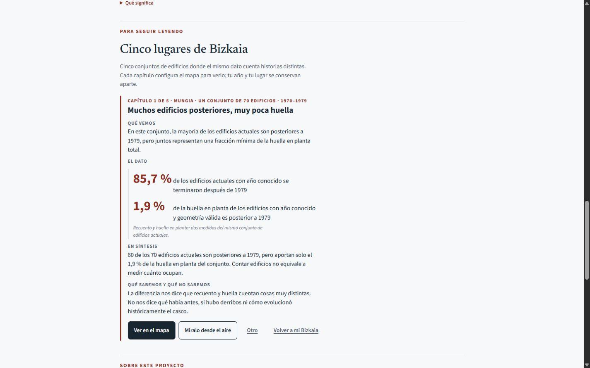
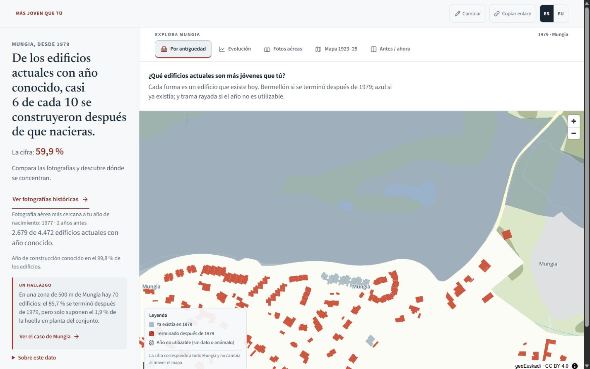
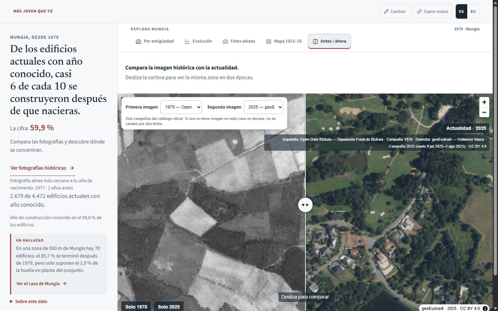
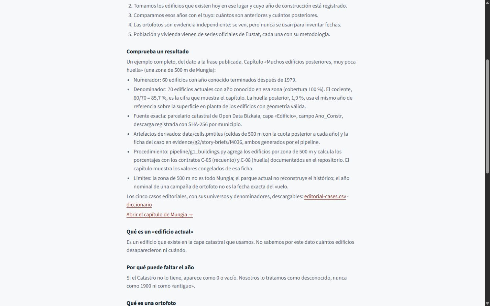
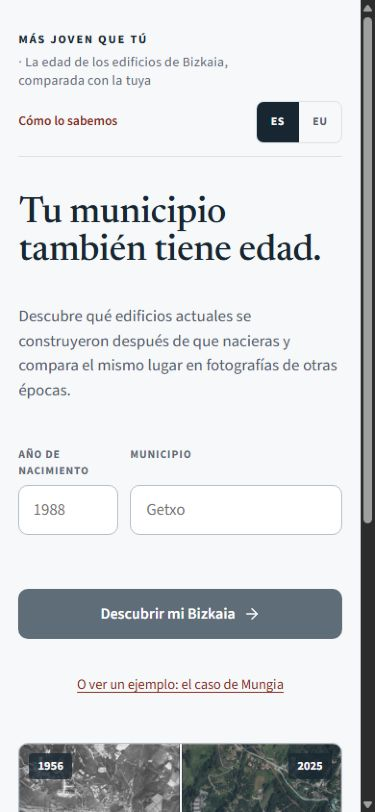

Más joven que tú — demo editorial
Un hallazgo que cambia al cambiar la medida
En una zona de 500 m de Mungia, 60 de los 70 edificios actuales con año conocido son posteriores a 1979: el 85,7 %. Sin embargo, solo aportan el 1,9 % de la huella en planta del conjunto. Contar edificios no equivale a medir cuánto ocupan.

Explorar, comparar y comprobar

Resultado: cifra, universo y cobertura visibles.
Ortofotos oficiales: año de campaña, fecha de vuelo disponible y atribución.
Trazabilidad: del dato al resultado publicado.
Entrada móvil y ejemplo sin formulario.Prueba la pieza
Abrir el ejemplo · Resultado de Mungia · Cómo lo sabemos
Estas capturas proceden del build estático local corregido del 28-09-2026; su sello y procedencia constan en el registro de captura. No certifican qué versión está publicada. El Catastro describe edificios actuales, no reconstruye edificios desaparecidos. Las fotografías no se utilizan para derivar métricas históricas.